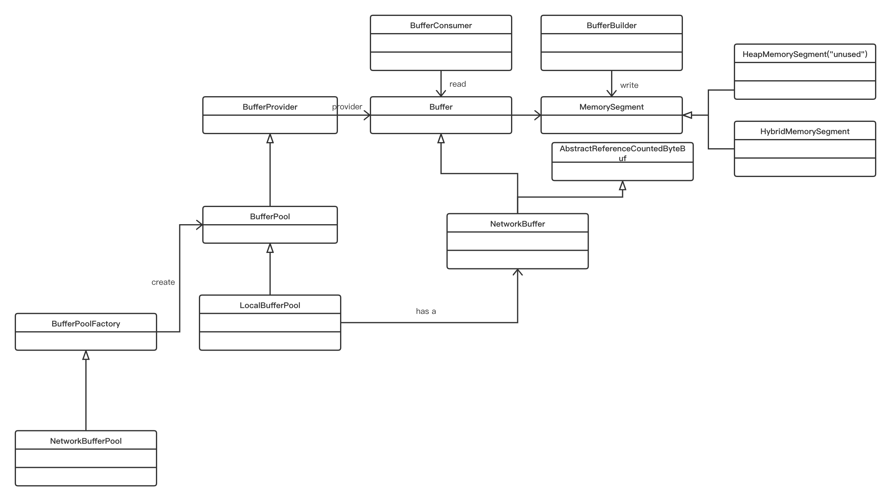

介绍
对于Flink 来说，需要进行大部分的IO,以及保证更高的吞吐降低GC 压力，需要自己管理一套内存，以及还需要自己的序列化，因为序列化我们知道他的数据结构，所以自己实现一套来说性能会更好，序列化也是需要使用内存的，所以flink 创作了MemorySegment
MemorySegment
MemorySegment 是一个抽象类，他的具体实现 HybridMemorySegment 和 HeapMemorySegment ，不过HeapMemorySegment 已经不再使用了，HybridMemorySegment 其实也是可以支持heap 和off-heap 的
|
这是MemorySegment 的构造函数，heapMemory 是一个byte 数组，如果是heap 类型的话就存储，如果是off-heap 就是null
|
这个比较简单了 address 存放的是一个地址,HybridMemorySegment如果是 off的话 使用ByteBuffer 进行存储
在Flink 里面我们为了能够更加高效的利用JIT 优化 flink 使用了unsafe 操作
|
UNSAFE.getShort(heapMemory, pos) 这样一段代码就是通过一个基地址然后添加一个offset 进行获取数据就跟操作系统进行寻址的时候有个一个基地址+偏移量
针对MemorySegment 的操作还进行一个类似与生产者消费者的模型 BufferBuilder 用于直接写入MemorySegment BufferConsumer 就取消费当然是通过Buffer 进行获取，当然这两个不是一个线程安全的
为了能够方便的使用MemorySegment 还有一个MemorySegmentFactory,用于create
###Buffer
Flink 里面也有一个buffer 这个buffer 跟netty 的bytebuf 差不多 结构
+——————-+—————-+———————-+
- | discardable bytes | readable bytes | writable bytes |
- +——————-+—————-+—————-+
- | | | |
- 0 <= readerIndex <= writerIndex <= max capacity
读写指针 这样的操作
对于Buffer 的一个具体实现，有NetworkBuffer ，这个类还实现了AbstractReferenceCountedByteBuf ，这个就是netty 里面的引用计数
为了能够更好的使用Buffer 使用了BufferPoll 进行池化,BufferPool 同时实现了 BufferProvider BufferRecycler 一个用与create buffer 一个用与回收
BufferPool 是一个抽象类，只有一个实现LocalBufferPool
使用BufferPool 不是直接new，而是通过 BufferPoolFactory 这个抽象工厂，NetworkBufferPool 是BufferPoolFactory 的具体实现
整体的类图

总结：
- 通过BufferPoolFactory 获取bufferpool，bufferpool 通过buffer provider 获取buffer ,然后buffer 里面又包含了memory segment,最后使用了 HybridMemorySegment，因为buffer pool 只有一个LocalBufferPool 的实现，所以他们在每个tm 里面均匀的分配
- 通过使用UNSAFE 类针对JIT 进行一个优化